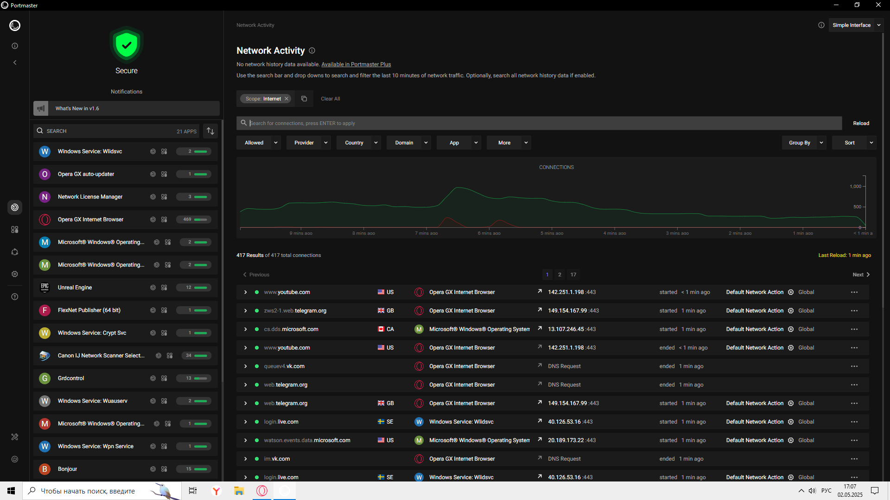
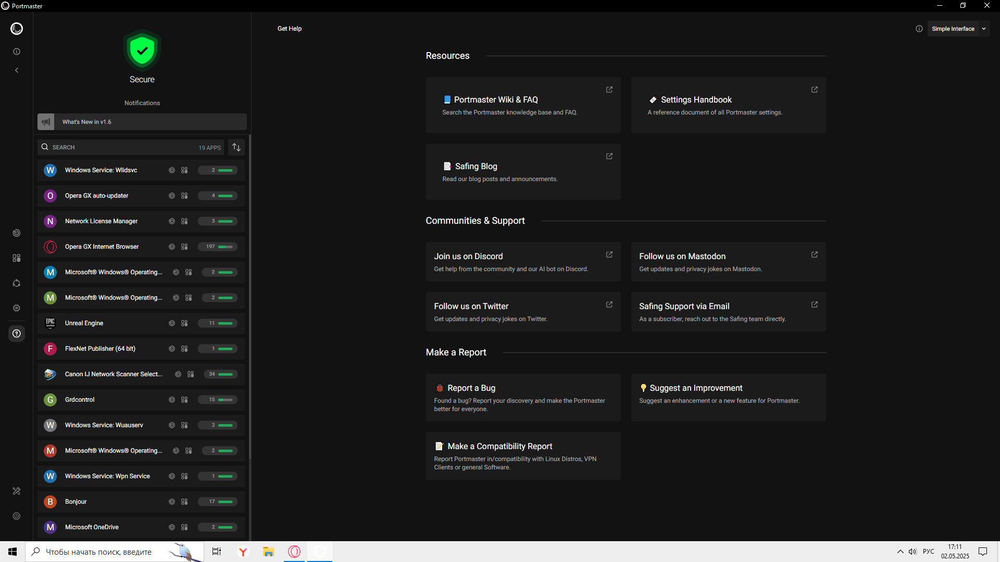
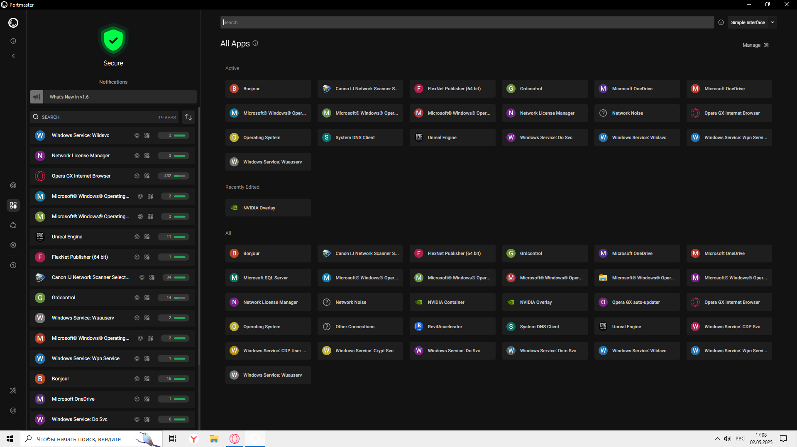
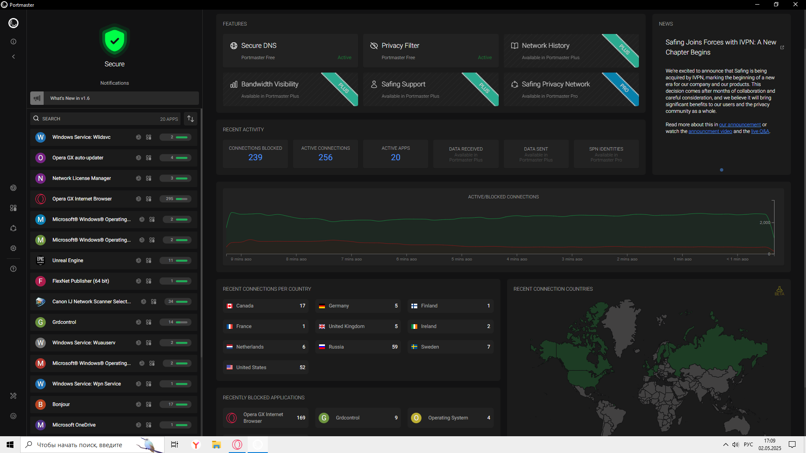
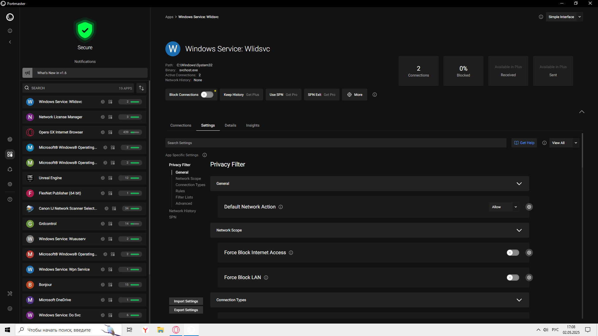
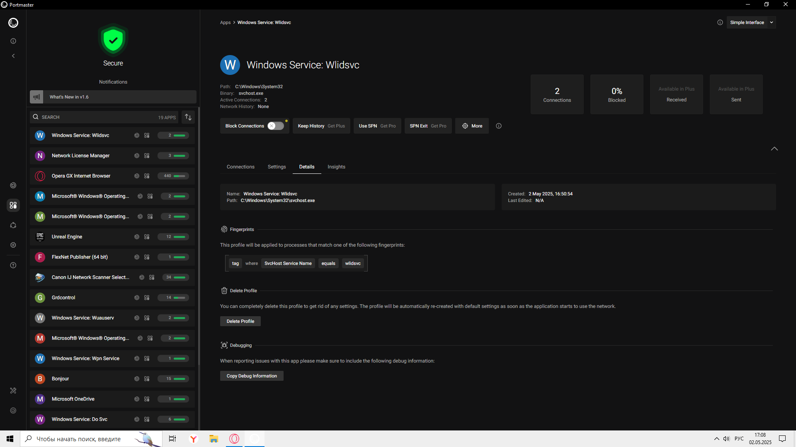

Safing.io — это комплексный инструмент для защиты конфиденциальности в интернете, который предоставляет несколько уровней безопасности, включая блокировку отслеживающих сервисов, управление сетевыми соединениями и анонимность для пользователя.

Этот раздел отображает текущую и историческую сетевую активность приложений.

Это справочный раздел с документацией и поддержкой.

Здесь отображаются все приложения, взаимодействующие с сетью, сгруппированные по категориям.

Это главная панель управления, которая предоставляет обзор текущего состояния защиты и сетевой активности.
Для чего нужен раздел?

Этот раздел посвящён настройкам безопасности и управления подключениями.
Для чего нужен раздел?
Детальная настройка профилей приложений и отладка.
Для чего нужен раздел?

Print: Путь к исполняемому файлу (C:\Users\Jason\AppData\Local\Programs\Opera GX).
Binary: Имя процесса (open.exe).
Active Connections: Количество активных подключений (218).
Network History: Отсутствует (None).
Для чего нужно? Быстрый доступ к расположению браузера и мониторинг его сетевой активности.
Key History: Функция доступна в платной версии Get Plus (возможно, журналирование ключевых событий).
Use SPN / SPN Exit: Требуют подписки Get Pro (SPN — Safing Privacy Network, защищённый VPN-выход).
More: Дополнительные опции.
Что будет при нажатии?
Кнопки:
Для чего нужно? Ручное управление каждым соединением (например, блокировка рекламных доменов).
Provider: Провайдер (например, Cloudflare).
Country: Страна сервера.
Domain: Домен подключения.
More: Дополнительные критерии (например, тип трафика).
Пример использования: Блокировка всех подключений к серверам в определённой стране.
Group By: Группировка по доменам, странам и т.д.
Sort: Сортировка по времени, количеству запросов.
Для чего нужно? Удобный анализ трафика (например, выявление самых активных доменов).
Интервалы обновления данных: от Gx min_auto (настраиваемый интервал) до < 1 min_auto (каждую минуту).
Что делает? Позволяет настроить частоту обновления списка подключений.
Отображает детали последних соединений:
| Колонка | Описание | Пример значения |
|---|---|---|
| Domain/IP | Адрес сервера | features.opera-apt2.com (82.145.215.99:443) |
| Status | Статус (начато/завершено) | started / ended |
| Time | Время активности | 1 min ago |
| Action | Правило (например, блокировка) | Default Network Action |
| Scope | Уровень применения | Global (для всех процессов) |
Примеры строк:
Для чего нужно?